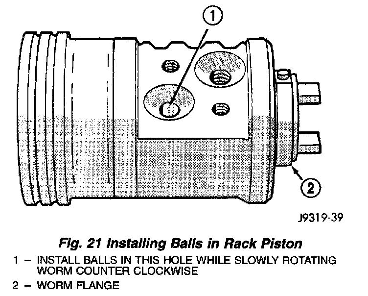
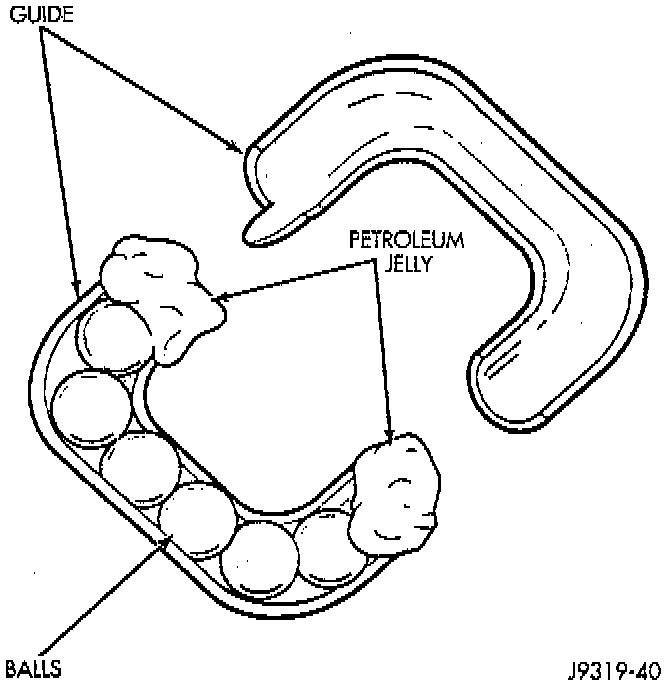
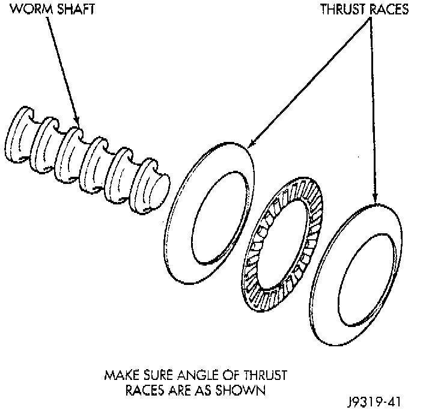

Installation
1. Clean all components in solvent and dry with compressed air.2. Check for scores, nicks or burrs on the rack piston finished surface. Slight wear is normal on the worm gear surfaces.
3. Install O-ring seal and teflon ring and lubricate with power steering fluid.
Fig. 21:

4. Install worm shaft to rack piston outside of housing. Fully seat worm shaft to rack piston. Align worm shaft spiral groove with rack piston ball guide hole.
NOTE: There are 12 black and 12 silver (Chrome) balls in the rack piston circuit. The black balls are smaller than the silver balls. The balls must be installed alternately into the rack piston and ball guide. This procedure will maintain worm shaft preload.
5. Lubricate and install rack piston balls through return guide hole while turning worm shaft COUNTERCLOCKWISE.
WARNING: Make sure all rack piston balls are installed properly. Improper installation may result in personal injury.

6. Install remaining balls to guide using grease or petroleum jelly at each end to hold in place.
7. Install guide onto rack piston and return with clamp and screws. Tighten screws to 58 Nm (43 ft. lbs.).
8. Insert Arbor C-4175, or equivalent into bore of rack piston. Hold tool tightly against worm shaft while turning the stub shaft COUNTERCLOCKWISE.
9. The rack piston will be forced onto the tool and hold the rack piston balls in place.

10. Install the races and thrust bearing to worm shaft.
11. Install worm shaft to housing.
12. Install valve
13. Install rack piston to worm shaft from tool, compress seals.
14. Hold Arbor tightly against worm shaft and turn stub shaft CLOCKWISE until rack piston is seated on worm shaft.
15. Install rack piston plug and tighten to 150 Nm (111 ft. lbs.).
16. Install housing end plug.
17. Install pitman shaft and side cover.
18. Adjust steering gear.